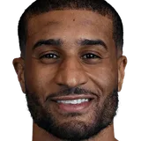
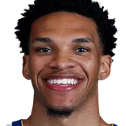

Played 1 season for 1 team; his teams went 12–19 in his games.
Jump to: Record by opponent · Season by season · Teammate help
Compare LJ Cryer with…
Final NBA finish, season by season
Title Finals Other playoffs Missed playoffs. #1 = champion; the dashed line is last place that season. Each point opens that season's final standings.
All 30 teams ranked in 2025-26, his best finish (#20)Teammate help
 Stephen Curry1.01 season
Stephen Curry1.01 season
Career
Career records (W–L, W − L, with and without) include 2026-27 games through Nov. 21, 2026; season counts and finishes are through 2025-26. Each card opens its board in the same scope. How we count.

With and without his teammates
His 12 teammates with the most regular-season games together. "Together" is the team's record in the games both played for it; "Without him" is the team's record in the games LJ Cryer played for that team while the teammate was on it (between the teammate's first and last game for the team, the appearance span) and the teammate did not play. Fewer than 20 games without him: no gap. Games through Nov. 21, 2026. How we count.
 Brandin Podziemski
Brandin Podziemski Golden State 2025-26 to 2026-27
Golden State 2025-26 to 2026-27- Together
- 12–17 41.4%
- Without him
- 0–1 0.0%
- Gap
- Too few games without him

Gary Payton IIGolden State 2025-26 to 2026-27- Together
- 10–16 38.5%
- Without him
- 2–3 40.0%
- Gap
- Too few games without him
 Gui SantosGolden State 2025-26 to 2026-27
Gui SantosGolden State 2025-26 to 2026-27- Together
- 9–17 34.6%
- Without him
- 3–2 60.0%
- Gap
- Too few games without him
 De'Anthony MeltonGolden State 2025-26 to 2026-27
De'Anthony MeltonGolden State 2025-26 to 2026-27- Together
- 10–15 40.0%
- Without him
- 2–4 33.3%
- Gap
- Too few games without him

Will RichardGolden State 2025-26 to 2026-27- Together
- 10–15 40.0%
- Without him
- 2–4 33.3%
- Gap
- Too few games without him
 Draymond GreenGolden State 2025-26 to 2026-27
Draymond GreenGolden State 2025-26 to 2026-27- Together
- 10–15 40.0%
- Without him
- 2–3 40.0%
- Gap
- Too few games without him
 Malevy LeonsGolden State 2025-26 to 2026-27
Malevy LeonsGolden State 2025-26 to 2026-27- Together
- 7–18 28.0%
- Without him
- 5–1 83.3%
- Gap
- Too few games without him
 Pat SpencerGolden State 2025-26
Pat SpencerGolden State 2025-26- Together
- 6–12 33.3%
- Without him
- N/A N/A
- Gap
- Too few games without him
 Al HorfordGolden State 2025-26 to 2026-27
Al HorfordGolden State 2025-26 to 2026-27- Together
- 8–8 50.0%
- Without him
- 4–11 26.7%
- Gap
- Too few games without him
 Georges NiangGolden State 2026-27
Georges NiangGolden State 2026-27- Together
- 6–7 46.2%
- Without him
- N/A N/A
- Gap
- Too few games without him
 Charles BasseyGolden State 2025-26 to 2026-27
Charles BasseyGolden State 2025-26 to 2026-27- Together
- 6–7 46.2%
- Without him
- N/A N/A
- Gap
- Too few games without him
- Yaxel LendeborgGolden State 2026-27
- Together
- 6–7 46.2%
- Without him
- N/A N/A
- Gap
- Too few games without him
Latest completed seasons
- 2025-26·Golden State·#20 of 3037–45 · Missed playoffs
2026-27 so far
Games through Nov. 21, 2026, the last game in the nightly data. These games are already in his career records above (W–L, win %, W − L, with and without, all marked "incl. 2026-27"). Season counts, final finishes and teammate help use completed seasons through 2025-26; 2026-27 joins them when the season ends.
| Team | His games | With him | Without him | Gap | On/off per 100 | Started / bench | Close games |
|---|---|---|---|---|---|---|---|
| 13 | 6–7 46.2% | 2–1 66.7% | −20.5 | −10.3 | 0–2 / 6–5 | N/A |
Season by season
Newest first; every header sorts. Final NBA finish is the team's rank among all teams that season (#1 = champion) and opens that season's standings. "Without him" uses the team-season window; the span line counts only the games between his first and last game for the team.
| 2025-26 | #20 of 30 | 37–45 45.1% | Missed playoffs | 18 of 82 | 6–12 33.3% | 31–33 48.4%span: 7–12, gap −3.5 | −15.1 |
On/off, starts and close games
From the lineup data, 1996-97 on. On/off is net points per 100 possessions with him on the floor minus off, a different unit from the win-rate gaps. Started and off the bench are team records in those games; close games are those within 5 points in the last 5 minutes with him on the floor.
| 2025-26 | +5.8 | 0–1 0.0% | 6–11 35.3% | 3–4 42.9% |
Teammate help by season
Two separate numbers per season, each with every teammate that adds to it. Help this season = Teammates Score points for honors won that season by teammates who shared a game with him. Help coming in = the same teammates' honors from the season before. How help works.
- 2026-27Golden StateHelp this season: pending (honors are awarded after the season)
Help coming in (2025-26 honors of teammates he has played with so far): 1 = 1 Stephen Curry
- 2025-26Golden State
Stephen Curry All-Star13 g
Help this season: 1 = 1 Stephen Curry
More: help coming in and other teammates
Help coming in (teammates' honors the season before): 5.5 = 4.5 Stephen Curry + 1 Draymond Green
Other teammates (no honors that season): Brandin Podziemski 18 g, Pat Spencer 18 g, Draymond Green 15 g, Gui Santos 15 g, Gary Payton II 15 g, Malevy Leons 14 g, Will Richard 13 g, De'Anthony Melton 12 g, Kristaps Porzingis 9 g, Quinten Post 9 g, Jeenathan Williams 9 g, Omer Yurtseven 7 g, Al Horford 6 g, Seth Curry 5 g and 6 more
Record against each opponent
Regular season, through 2025-26 (2026-27 games not included): 18 games, 6–12, against 17 franchises.
Grouped by franchise (named as today); game lists keep each team's name that season. Filters and the tab are kept in the URL, so a filtered view can be shared.
| Games list | |||||||
|---|---|---|---|---|---|---|---|
| 2 | 1–1 | 50.0% | 0 | N/A | 2025-26 | ||
| 1 | 0–1 | 0.0% | −1 | N/A | 2025-26 | ||
| 1 | 1–0 | 100.0% | +1 | N/A | 2025-26 | ||
| 1 | 0–1 | 0.0% | −1 | N/A | 2025-26 | ||
| 1 | 0–1 | 0.0% | −1 | N/A | 2025-26 | ||
| 1 | 1–0 | 100.0% | +1 | N/A | 2025-26 | ||
| 1 | 0–1 | 0.0% | −1 | N/A | 2025-26 | ||
| 1 | 0–1 | 0.0% | −1 | N/A | 2025-26 | ||
| 1 | 1–0 | 100.0% | +1 | N/A | 2025-26 | ||
| 1 | 0–1 | 0.0% | −1 | N/A | 2025-26 | ||
| 1 | 1–0 | 100.0% | +1 | N/A | 2025-26 | ||
| 1 | 0–1 | 0.0% | −1 | N/A | 2025-26 | ||
| 1 | 0–1 | 0.0% | −1 | N/A | 2025-26 | ||
| 1 | 0–1 | 0.0% | −1 | N/A | 2025-26 | ||
| TorontoMost-faced: Garrett Temple (1 games) · Head-to-Head | 1 | 0–1 | 0.0% | −1 | N/A | 2025-26 | |
| 1 | 0–1 | 0.0% | −1 | N/A | 2025-26 | ||
| 1 | 1–0 | 100.0% | +1 | N/A | 2025-26 |
Rows add up to his career record in his games. A playoff series counts when he played in it; early round-robin games show as games only. How we count.
Arrival and departure
Team wins per 82 games the season before he arrived vs his first season there, and his last season vs the season after he left. He leaves a team only when his next season with games is for another team (or he never plays again); whole seasons he missed and came back from are one "Missed" row with the team's record without him. Per 82 so short seasons compare fairly. These are team records, not a measure of what he did.
| Debut | 2025-26 | 2024-25: 48–34 48.0 per 82 | 2025-26: 37–45 37.0 per 82 | −11.0 wins |